#> Loading required package: tlf1. Introduction
The aim of this vignette is to document how to create plots using the
tlf user interface (UI) called by
runPlotMaker().
2. How to start
Use the function runPlotMaker() to start the User
Interface. The function will load shiny required for the
UI.
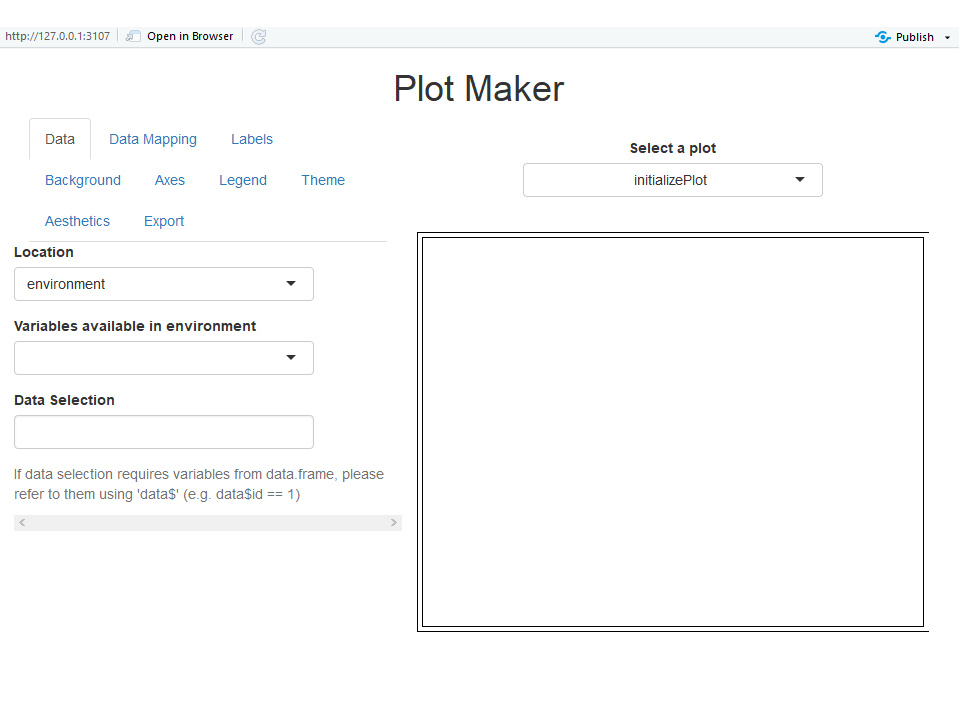
3. How to import data
In the navigation bar Data, the first field named Location allows two ways of importing data: environment and file.
Data can be directly taken from the global environment if the field Location uses environment. In the figure below, a variable named myDataset was created in the global environment and is listed in the field Variables available in environment. Note that such variables are required as data.frame if you want to create a plot.
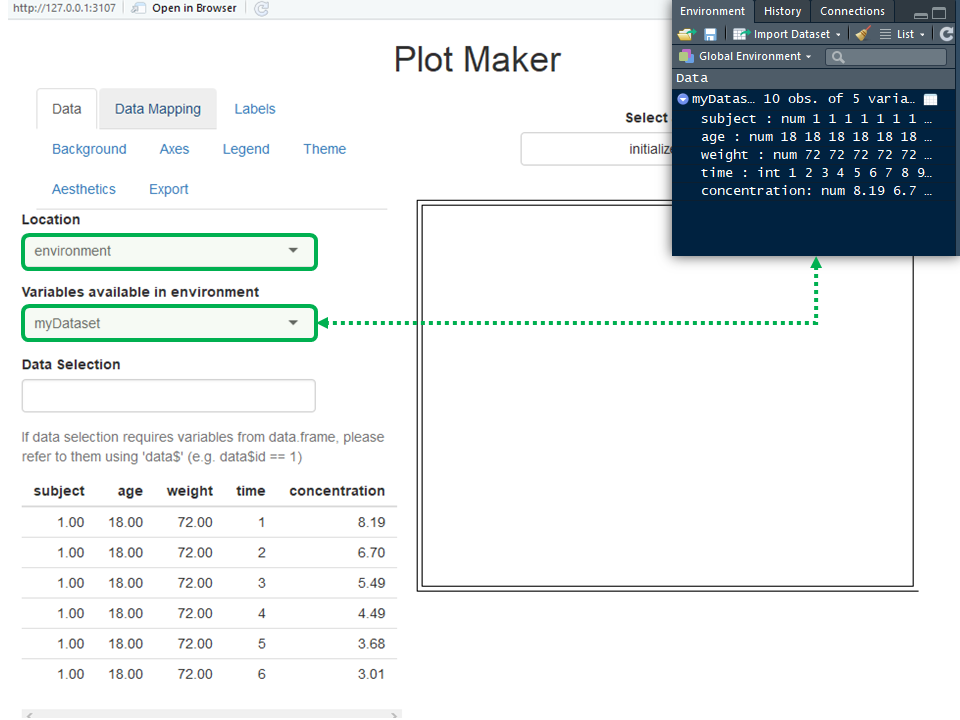
Data can also be imported from a file if the field Location uses file. This will change the field Variables available in environment into Select a file (figure below). When a file is loaded, it will be read using the function “read.csv” if the file is a csv file or “read.table” otherwise. Note that it is possible to use options and skip the first lines of your file and/or choose a specific column separator as illustrated in the figure below. In the figure below, a variable named myDataset was created in the global environment and is listed in the field Variables available in environment.
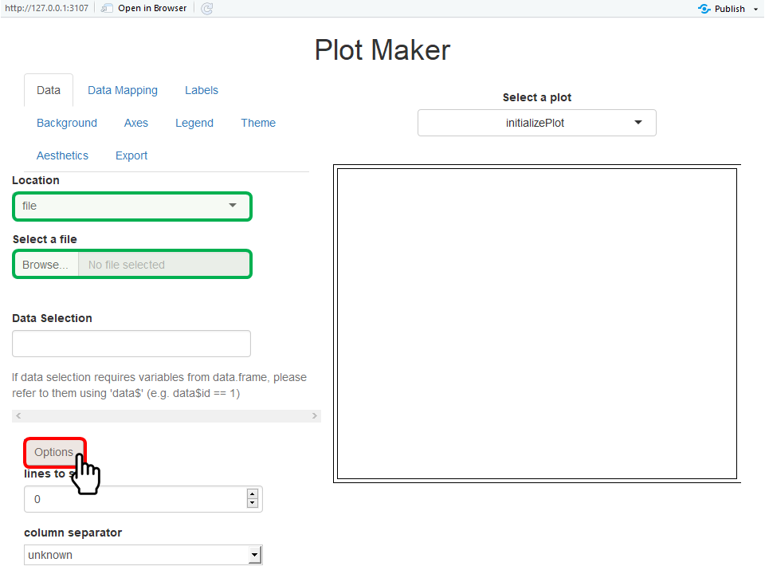
When data are imported as illustrated below on the dataset “test-data.csv”, the first rows of the dataset are shown on the bottom left side of the UI.
The field Data Selection allows users to enter expressions to select subsets of their data. The only requirement to use that field is to name the imported data “data”. For instance, if only male adults are selected in the example below, the field Data Selection should include dataSex %in% “Male”.
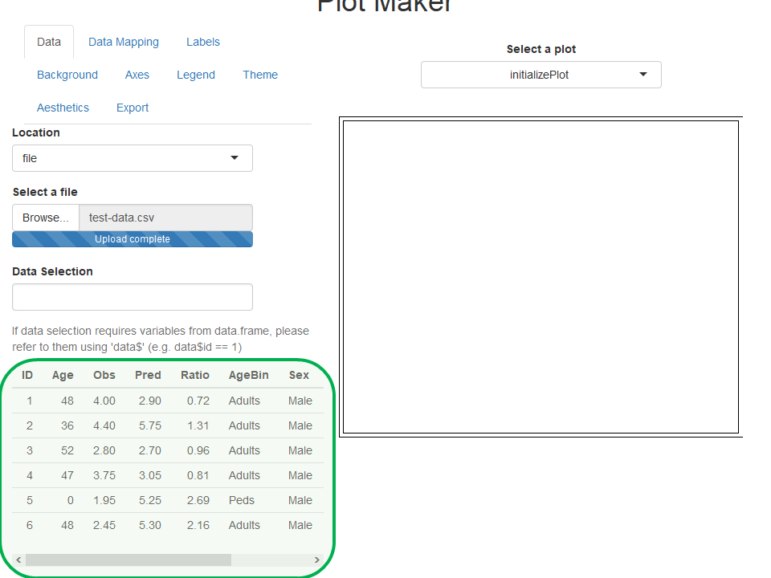
4. How to plot the imported data
This section will use the data imported from the dataset “test-data.csv” as an example and will show the workflow to create a PK Ratio plot using the UI.
4.1. Select the plot and its variables
The first steps to plot the data is to select which plot and variables are plotted. This is the role of the Data Mapping navigation bar (figure below).
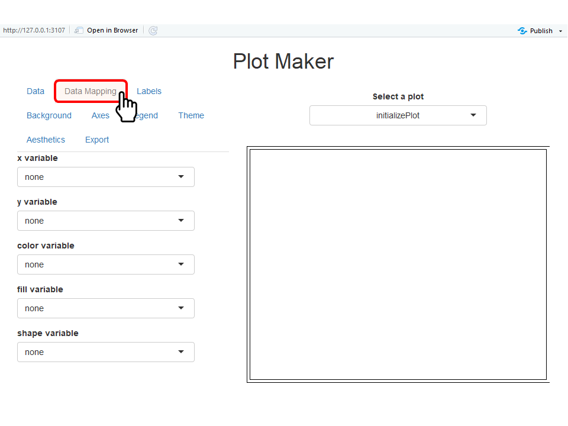
In the navigation bar Data Mapping, users can select from the variable names available in the dataset which should be plotted in x, y or used to split the data by color, shape, linetype, and fill as illustrated below. Some mappings are not used by all the plots and won’t be available if the corresponding plot is currently selected. Note that if no mapping is wanted for a variable, the corresponding field can be set as none.
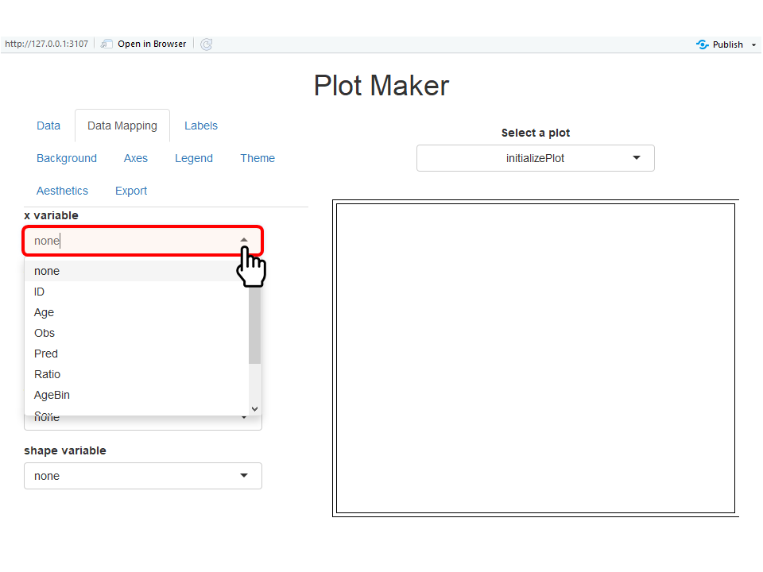
In parallel the field Select a plot allows users to
choose the advanced plot they want to perform (figure below). In the
list of available plots, the names were chosen as the names of the
tlf functions used to perform the same plots.
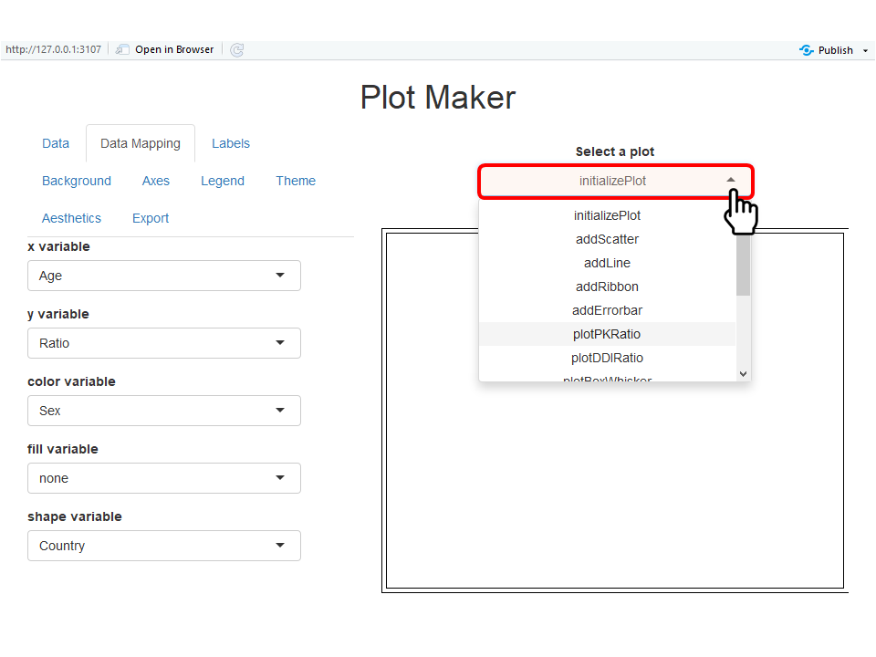
The corresponding plot is shown below. An additional table is added below the PK Ratio plot and shows the measure of number of points within 1.5- and 2-fold errors. Other plots, such as box-whisker plots, may show similar additional results below the plots.
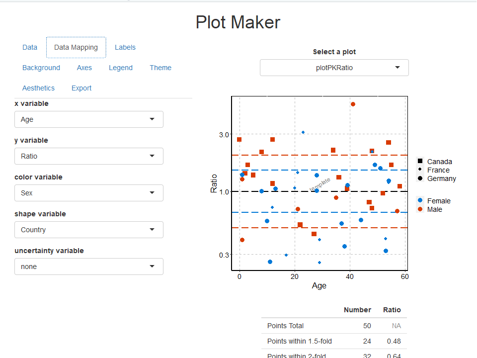
4.2. Update plot properties
Some plot properties can be updated using the navigation bars Labels, Background, Axes, Legend, Theme and Aesthetics. The examples below illustrate briefly how to update such properties.
In the Labels navigation bar, font properties and content of the most common labels are available. For font properties of ticks and legend are available in the properties Axes and Legend. The example below highlights the updates of the properties of the watermark which indicates “watermark” instead of “template” written bigger in “goldenrod” color.
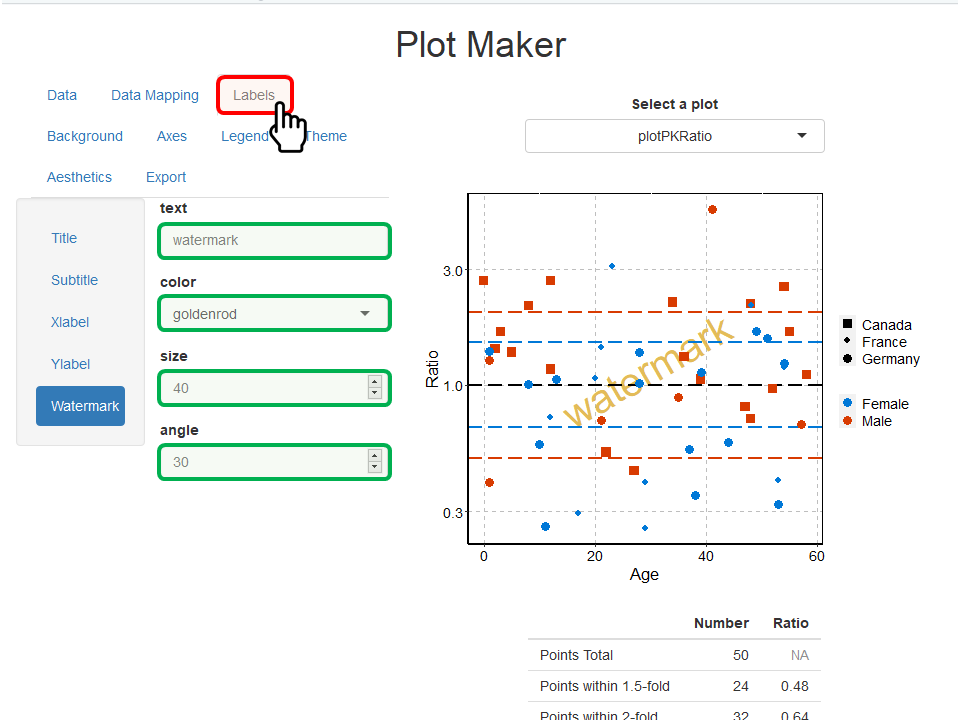
The Background navigation bar includes the properties of the fill, colors, sizes and linetypes for each background elements. The example below highlights the updates of the properties of the plot area (area around the panel) which was filled with “aliceblue” color and uses a “solid” and “black” border.
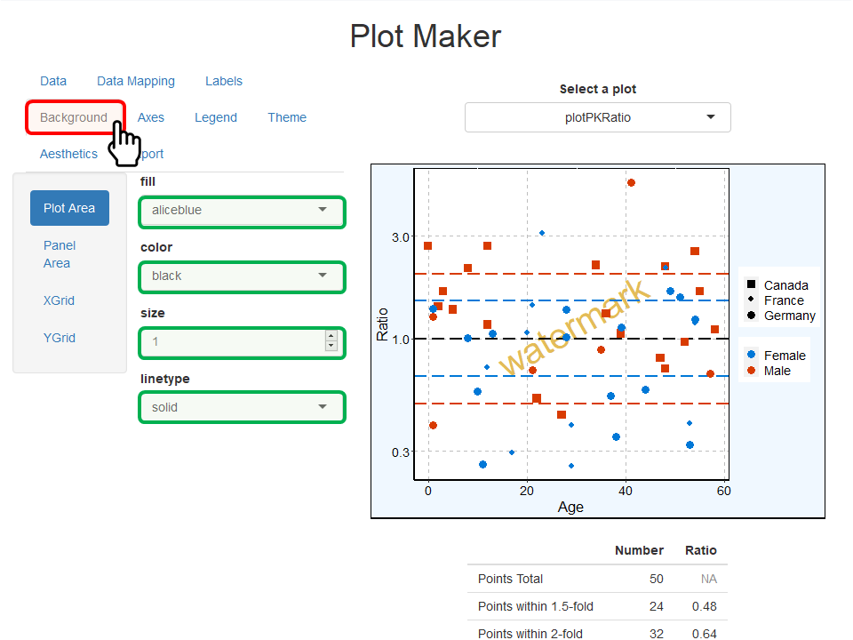
The Axes navigation bar includes the properties of
the axes lines (colors, sizes and linetypes), the font properties of
their ticks as well as their scales and limits. The example below
highlights the updates of Y-axis scale in which new limits were defined
as ymin=0.1 and ymax=10. Note that limits are
taken into account only if both ymin and ymax
values are used.
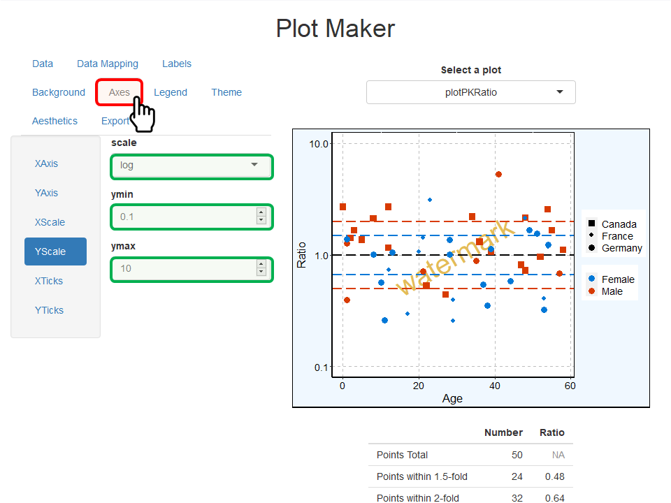
The Legend navigation bar includes the properties of
the position of the legend (figure below). Fonts and background are not
yet accounted for in the current version of
runPlotMaker().
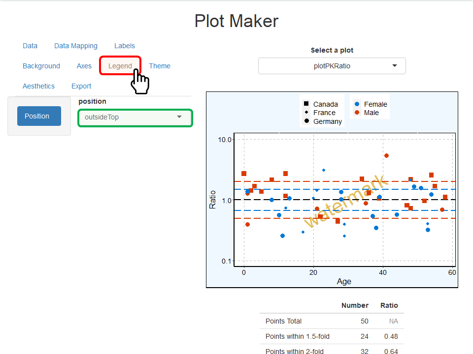
The Aesthetics navigation bar defines how points, lines, ribbons and errorbars are plotted. As indicated by the help text, using one of the predefined selection keys (next, same, first, or reset) will use the values available in the theme aesthetic map. Any other value will be used as is to define how points, lines, ribbons and errorbars are plotted. The example below highlights the updates of how lines are plotted in this PK Ratio plot. Lines are now all in “#000000” (black) color using the concept of theme for their linetype (theme map for linetype is solid, then longdash, then dotted line…).
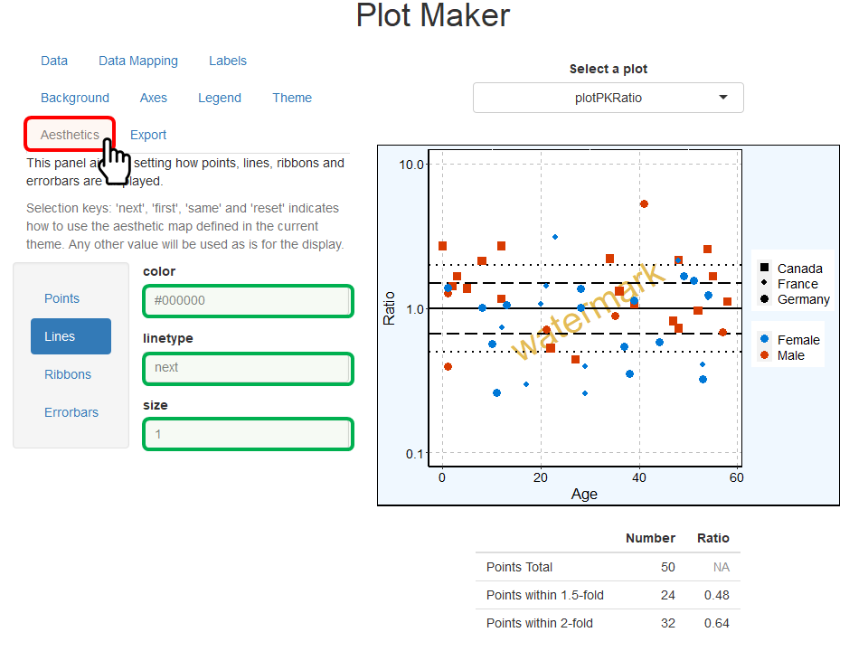
5. Save/export a plot
The navigation bar Export allows to save the current plot as a file by clicking on Save Plot (figure below). Note that you need to include the extension of the file at the end of the filename.
To prevent the final exported plot to shrink due to the legend, the dimensions can be automatically updated by clicking on Update dimensions for legend.
Additionally, the plot configuration - mainly corresponding to the
properties updated in section 4.2. - is available as a
PlotConfiguration object. The R code to re-create such an
object with the same properties is available in the navigation bar
Export. Users can either copy/paste or save such R
code.
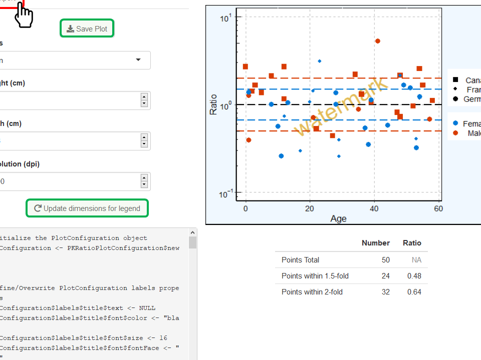
6. Plot-specific properties
6.1. Add a regression line
If plotObsVsPred or plotResVsPred is selected in Select a plot, you can perform and add a regression to your plot by clicking on the optional field Regression available below the plot (figure below). The regression lm stands for linear model and will add a linear regression to the plot; while loess will perform and add a loess regression to the plot.
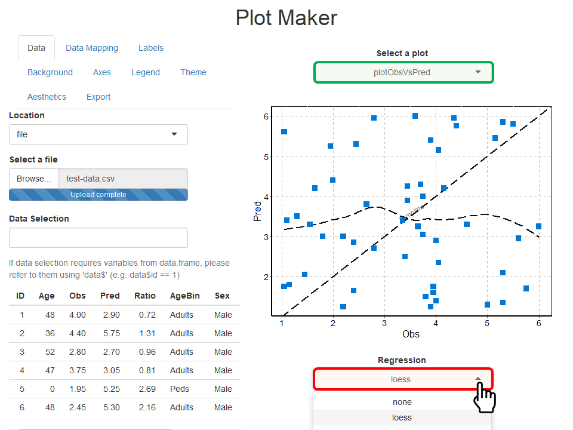
6.1. Tornado plot
If plotTornado is selected in Select a plot, two optional fields are available below the plot (figure below).
- The field Use bars allows you to switch from a tornado plot with horizontal bars to dots instead.
- The field Sort by x variable allows you to choose if the values should be sorted by the absolute value of x or used as is.
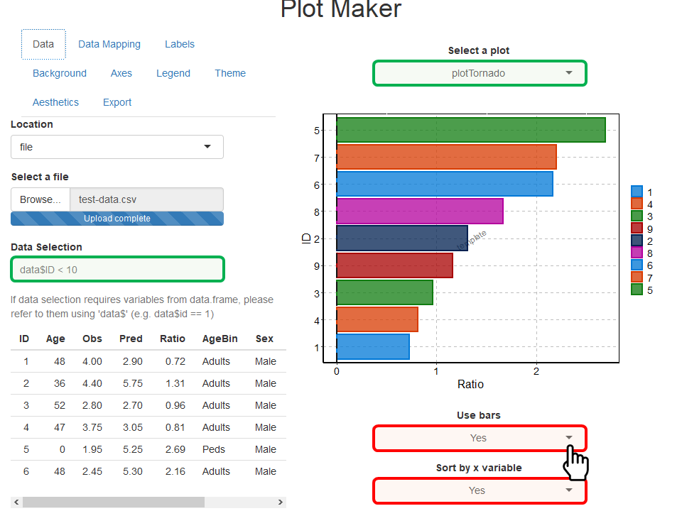